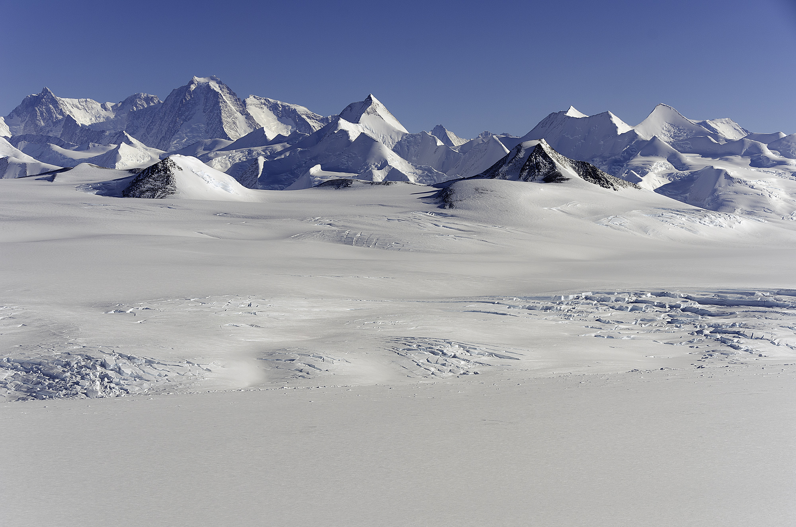

Civilizaciones Ocultas y Lo Que Vieron los que Fueron
Hace doce mil años, la Antártida era un continente diferente. Las pruebas geológicas muestran que sus costas occidentales eran mucho más templadas antes del último máximo glacial. La pregunta que algunos investigadores —y una cantidad notable de personas con acceso al continente— formulan no es si existió vida allí. Es cuándo y qué tan avanzada fue.
🏔️ Las "Pirámides" Antárticas

Las imágenes satelitales revelan varias formaciones geológicas de aspecto piramidal en el continente, especialmente en la Cordillera Ellsworth y zonas cercanas al Polo. Los geólogos las denominan nunataks: cimas rocosas erosionadas por el movimiento de glaciares en cuatro direcciones, produciendo formas triangulares naturales. La explicación científica es sólida. Lo que genera debate es la precisión de algunas de estas formas y su alineación con los puntos cardinales —algo que en las pirámides estudiadas el ángulo de erosión explica, pero que visualmente resulta difícil de descartar como meramente casual.
🗺️ El Mapa de Piri Reis — 1513
Un mapa otomano del almirante Piri Reis, fechado en 1513, parece mostrar una masa continental en el Polo Sur que coincide aproximadamente con la costa antártica sin hielo. El problema: la Antártida fue oficialmente descubierta en 1820. Los defensores de la teoría sostienen que el mapa refleja conocimiento de una civilización anterior que cartografió el continente antes de que se helara completamente. Los historiadores cartográficos explican que las distorsiones de proyección del siglo XVI producen ese efecto de manera natural. Ambas explicaciones son técnicamente coherentes. El debate no está cerrado.
🌿 Zonas Verdes — ¿Quién las vio?
Existen zonas documentadas de vegetación en la Antártida —principalmente en la Península Antártica y en islas subantárticas— donde el calor geotérmico local y la exposición solar crean microclimas capaces de sostener musgos, líquenes y algunas plantas vasculares. Pero las descripciones que circulan en ciertos testimonios van más allá: personas que afirman haber visto valles verdes no registrados en la cartografía oficial, zonas de vegetación densa interior no consistentes con lo que el clima antártico debería permitir. Ninguno de estos testimonios ha sido verificado con fotografía pública. Todos provienen de personas que estuvieron allí bajo contratos con cláusulas de confidencialidad.
🏛️ El Complejo de 62 Acres
En el ecosistema de testimonios militares y testimonios de excursionistas no autorizados que circula en plataformas de investigación alternativa, aparece de forma recurrente el relato de un Navy SEAL que afirma haber encontrado, durante una misión encubierta, una estructura de 62 acres bajo el hielo con corredores, habitaciones, y puertas. Una sala de nueve acres. El miembro del SEAL, identificado solo por el nombre de pila "Spartan One" en las versiones que circulan, afirma haber sido sometido a un debriefing inusualmente intenso y a la firma de un acuerdo de no divulgación. La descripción aparece corroborada por otras personas con backgrounds militares que dicen haber recibido debriefings similares después de misiones en el continente. Ninguno ha presentado evidencia física.
Testimonios — Lo que Vieron y Lo que Les Dijeron
Los Que No Regresaron — O No Volvieron a Hablar
Esta es la parte más delicada del artículo. Y la que requiere más cautela. Porque la narrativa de "testigos que mueren o desaparecen después de revelar secretos" es también uno de los recursos más explotados por la desinformación. El cerebro humano detecta patrones incluso en ruido aleatorio. Y hay un mercado activo que convierte cada muerte accidental de alguien conectado remotamente a un tema sensible en evidencia de un encubrimiento. El caso del tuit falso de Buzz Aldrin, descrito en la Parte I, es un ejemplo perfecto de cómo se fabrica ese material: una emergencia médica real se convierte, con un montaje y una frase grandilocuente, en "prueba" de un encubrimiento que nunca existió.
Con esa advertencia hecha, estos son los casos que merecen ser mencionados, con el contexto que existe.
⚠️ Carl R. Disch — El único caso documentado de desaparición inexplicable
El 8 de mayo de 1965, Carl R. Disch, físico ionosférico del National Bureau of Standards, salió del edificio de radio ruido en la Base Byrd para caminar los 2,1 kilómetros hasta la estación principal. Nunca llegó. Los equipos de búsqueda encontraron su rastro pero tuvieron que regresar por las condiciones. Fue declarado muerto el 14 de mayo de 1965. Su cuerpo nunca fue recuperado. La Antártida no perdona los errores de navegación en condiciones de ventisca. Este caso es trágico pero no necesariamente misterioso. Es el único caso de desaparición individual en el continente que está bien documentado históricamente.
☠️ Rodney Marks — El "primer asesinato" del Polo Sur · 2000
Si existe un caso real que funciona como el "paciente cero" de las teorías de crímenes en la Antártida, es el del astrofísico australiano Rodney Marks. Trabajaba en la base Amundsen-Scott operando un telescopio de investigación cuando enfermó de forma repentina y murió el 12 de mayo de 2000. Por el crudo invierno antártico, su cuerpo no pudo ser extraído hasta seis meses después. La autopsia, realizada en Nueva Zelanda, reveló una dosis letal de metanol.
La policía neozelandesa investigó, pero chocó con un vacío legal de jurisdicciones y con la falta de cooperación de las agencias estadounidenses que gestionaban la base. El suicidio fue descartado. Nunca se determinó si Marks ingirió el metanol por accidente o si alguien lo envenenó deliberadamente. El caso quedó abierto y sin resolver —y se convirtió, en internet, en el ejemplo perfecto del científico que "vio algo a través del telescopio que no debía" y fue silenciado. Lo verificable es más sobrio: una muerte por envenenamiento nunca explicada, en una base sin jurisdicción policial clara, investigada con seis meses de retraso forzado por el clima.
🔴 La Teoría de los "Científicos Desaparecidos" — 2026
En 2026, una teoría de conspiración emergió en redes sociales alegando que investigadores conectados a proyectos clasificados —UAPs, energía avanzada, propulsión— estaban muriendo o desapareciendo a un ritmo inusual. El detonante fue la desaparición en febrero de 2026 del General de División retirado William Neil McCasland. La FBI dijo estar investigando posibles conexiones entre varios casos. La esposa de McCasland declaró públicamente que su marido no tenía clearances activos desde hacía más de una década y que su asociación con el mundo UAP había sido mínima. El analista científico Mick West señaló que, dado que más de 700.000 personas trabajan en posiciones con clearances en sectores aeroespaciales y de defensa, la mortalidad estadística normal produce cientos de muertes y desapariciones al año en ese grupo. Las investigaciones oficiales sobre la decena de casos enlazados en la lista viral no encontraron ninguna conexión real: las causas documentadas incluyeron suicidios vinculados a crisis de salud mental, disputas vecinales que escalaron a violencia, y enfermedades crónicas como el alzhéimer. La teoría conecta casos con vínculos variados al mundo antártico o de investigación secreta. Ninguno de esos vínculos está probado. Pero el patrón de vigilancia que el FBI decidió activar —oficialmente— es, en sí mismo, un hecho.
🔇 El Silencio Institucional
El caso más extendido no es el de personas muertas sino el de personas silenciadas. Investigadores y trabajadores que estuvieron en el continente bajo contratos de la NSF, Raytheon, o programas militares describen con notable consistencia los mismos elementos: debriefings más largos de lo esperado, acuerdos de no divulgación con cláusulas amplias, y una sensación generalizada de que preguntar demasiado tenía consecuencias profesionales. Esto no es prueba de nada. Pero el patrón es suficientemente consistente entre relatos independientes para no descartarlo completamente.
Los testimonios presentados en este artículo están catalogados por su estado verificable. Incluir un relato no verificado no equivale a avalarlo. La posición de este artículo es que la acumulación de testimonios independientes con patrones similares —especialmente cuando provienen de personas con backgrounds militares reales y cuando algunos de esos testimonios fueron presentados ante organismos oficiales del Congreso— merece ser documentada, no descartada.
El Tratado Antártico — La Pregunta que Nadie Formula
El 1 de diciembre de 1959, doce naciones —incluyendo EE.UU. y la URSS, en el pico absoluto de la Guerra Fría— firmaron el Tratado Antártico. En tiempo récord para un acuerdo internacional de esa magnitud, dos superpotencias que en ese momento tenían apuntadas armas nucleares entre sí acordaron convertir un continente entero en zona neutral, desmilitarizada, prohibida para pruebas nucleares y abierta a investigación científica. Todas las reclamaciones territoriales fueron suspendidas.
La velocidad del acuerdo —y la unanimidad que lo rodeó en un momento de tensión geopolítica extrema— es el detalle que más llama la atención a los investigadores que estudian el continente. No el contenido del tratado. El ritmo al que fue acordado.
Una interpretación convencional: el continente era demasiado remoto e inhóspito para merecer una guerra por él, y ambas superpotencias preferían mantenerlo fuera del teatro de operaciones. Una interpretación alternativa: ambas superpotencias habían descubierto algo que justificaba un acuerdo de neutralidad urgente. Algo que ninguna quería que la otra tuviera, y que tampoco ninguna quería que nadie más supiera que existía.
No hay evidencia que sustente la segunda interpretación. Pero tampoco existe documentación completa sobre qué motivó el ritmo inusualmente expedito del acuerdo. Los archivos de negociación siguen siendo en parte clasificados.